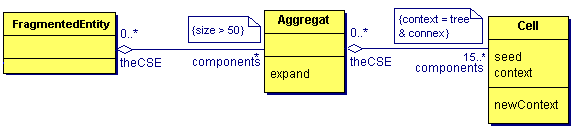

|
Demo_Aggregates (old "TSE")
Test of Cormas aggregative spatial entitiesChristophe Le Page, Pierre Bommel, Cirad (See also the Demo_aggregates page) This model introduces the functionning principles of Cormas aggregative spatial entities. In the inheritage tree of the Cormas generic spatial entities, the compound spatial entity "SpatialEntity_Set" is specialized in :
The operations of aggregation-disintegration are based on the two attributes "components" of SpatialEntitySet (a collection of lower level spatial entities) and "theCSE" (Component of a Spatial Entity: register of belonging to higer level spatial entities). The Demo_Aggregate model is a didactic model that allows to test two different ways to create spatial aggregates with Cormas. In the first one (Spreading of 3 forests: initForests & stepForests), the components Groves (or Aggregate) are defined as sets of contiguous cells sharing a same condition. Each cell has either true (aggregation condition) or false as value of its "tree" attribute. The effective instanciations from the compound spatial entity "Grove" are submitted to an additional constraint about a minimum number (set to 25) of contiguous components verifying the aggregation condition (see #buildForests). To let co-exist in the same model several spatial entities defined at different levels gives a great flexibility to write the dynamics of the model. Some of the processes are more easily described at the cellular level, as for some others, the aggregated level is more suitable. In this didactic and simplistic example,
A second level aggregate (FragmentedEntity) is also designed in this model. It is the collection of first level aggregates whose size is upper 50. We obtain a hierarchical aggregation, from the basic level to the second level aggregate : 
In the second one (setSingletonAggregatesFromRandomSeeds & swellForests), 30 "seed" cells are randomly chosen in the 50*50 spatial grid. 30 aggregates are intialized with one of these seeds as a single component. The iterative building process of the aggregates relies on the integration, among the cells belonging to the outside edge of each aggregate, of all the one that do not yet belong to another aggregate. There is two ways to build these aggregates from seeds:
How to run this model1. Spreading of 3 forests1.1 From the Cormas main menu, load Files -> Load, select
Demo_Aggregates. 2. Swelling from 10 seedsThe same process can be performed from 10 random seeds. 3. Two distinct growth dynamicsHere two processes are executed in parallel: an expansion of the
forest from the groves + a random probability for the plots to
switch from one state to the other (tree or not).
|
|